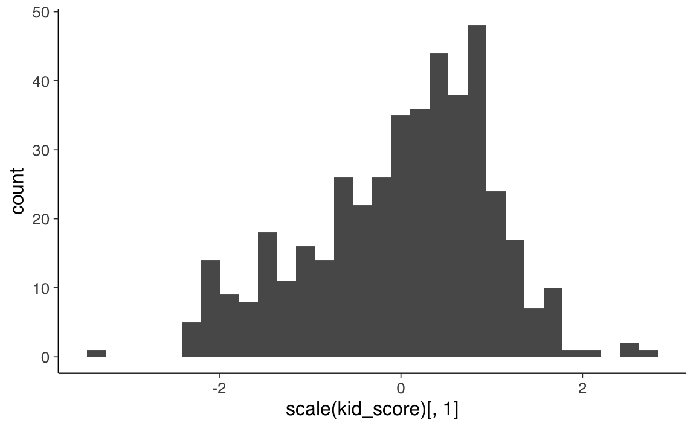
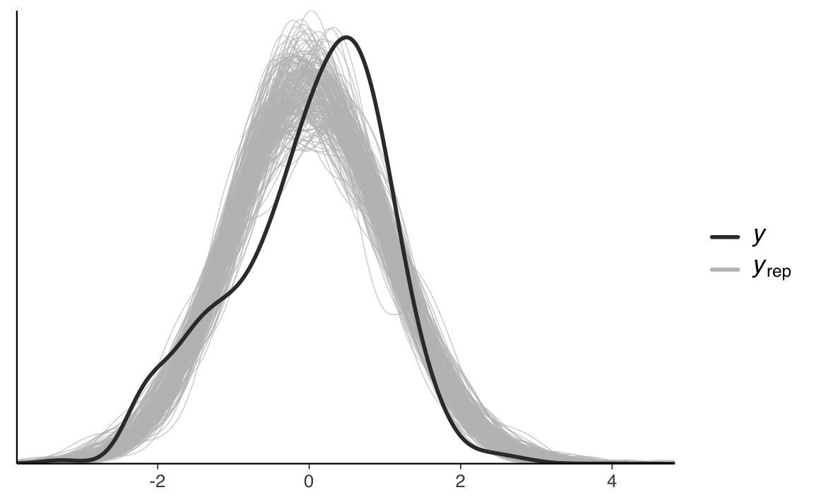
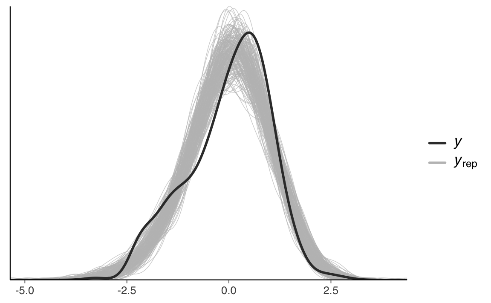

31 Predictive checks
In precedenza abbiamo visto come si genera la distribuzione predittiva a posteriori nel caso del modello più semplice: quello di un’unica variabile con una data distribuzione di probabilità. In particolare, abbiamo considerato il caso beta-binomiale. In questo Capitolo estenderemo la discussione al caso del modello di regressione lineare. Esamineremo un esempio di posterior predictive check in cui simuleremo \(p(y^{rep} \mid \theta, y)\) e un esempio di prior predictive check in cui simuleremo \(p(y^{rep} \mid \mathcal{M})\), ovvero condizionando il modello al meccanismo generatore dei dati \(\mathcal{M}\), ma senza però includere i dati del campione.
31.1 Distribuzione predittiva a posteriori
Consideriamo qui un esempio nel quale vengono usati i dati kidiq (Gelman et al., 2020). Leggiamo i dati in \(\mathsf{R}\).
Per svolgere l’analisi bayesiana sistemiamo i dati (standardizzati) nel formato appropriato per Stan:
Il seguente listato specifica il codice Stan necessario per simulare dati dalla distribuzione predittiva a posteriori.
stancode <- '
data {
int<lower=0> N;
vector[N] x;
vector[N] y;
}
parameters {
real alpha;
real beta;
real<lower=0> sigma;
}
model {
alpha ~ normal(0, 1);
beta ~ normal(0, 1);
sigma ~ normal(0, 1);
y ~ normal(alpha + beta * x, sigma);
}
generated quantities {
vector[N] y_rep;
for (i in 1 : N) {
y_rep[i] = normal_rng(alpha + beta * x[i], sigma);
}
}
'
writeLines(stancode, con = "code/post_pred_check_1.stan")Si noti il blocco generated quantities. In tale blocco del codice abbiamo definito la variabile y_rep. In precedenza, tali valori sono stati chiamati \(\tilde{y}\). Dunque, y_rep corrisponde a possibili futuri campioni di dati. La variabile y_rep è un campione di N = 434 possibili osservazioni future. Le abbiamo calcolate usando x, i valori della variabile indipendente del campione presente. Quindi immaginiamo che in tutti i possibili campioni futuri di 434 osservazioni i valori \(x\) siano gli stessi del campione osservato. Questa è un’assunzione del modello di regressione lineare: i valori \(x\) sono considerati “fissi” nell’universo dei campioni.
Nel caso presente, i primi 10 valori \(x\) (QI della madre) standardizzati sono i seguenti:
scale(df$mom_iq)[, 1][1:10]
#> [1] 1.4078352 -0.7092079 1.0295443 -0.0366907 -0.4836193 0.5267892
#> [7] 2.5928737 1.6763413 -1.2253649 -0.3284621Consideriamo il valore del QI della prima madre del campione, ovvero 1.4078352. Come si trova il valore y associato a 1.4078352 in un possibile campione futuro? Il codice Stan dice che
y_rep[i] = normal_rng(alpha + beta * x[i], sigma);Ciò significa che vogliamo prendere un valore a caso dalla distribuzione Normale di parametri
\[ \alpha + \beta x \] e deviazione standard \(\sigma\).
Nel caso presente non abbiamo un singolo valore per i parametri \(\alpha\), \(\beta\) e \(\sigma\). Invece abbiamo una distribuzione a posteriori per ciascun parametro, ovvero \(p(\alpha \mid y)\), \(p(\beta \mid y)\) e \(p(\sigma \mid y)\). Quindi come facciamo a calcolare il QI del figlio per la prima madre (avente QI standardizzato pari a 1.4078352) in un possibile campione futuro di osservazioni? Prendiamo un valore a caso dalla seguente distribuzione Normale:
\[ \mathcal{N}(\mu = \alpha + \beta \cdot 1.4078352, \sigma). \]
Restano da specificare i valori \(\alpha\), \(\beta\) e \(\sigma\). In tutti e tre i casi, prendiamo un valore a caso dalla corrispondente distribuzione a posteriori. Per \(\alpha\) scegliamo un valore a caso dalla distribuzione a posteriori \(p(\alpha \mid y)\), per \(\beta\) scegliamo un valore a caso dalla distribuzione a posteriori \(p(\beta \mid y)\) e per \(\sigma\) scegliamo un valore a caso dalla distribuzione a posteriori \(p(\beta \mid y)\). Così facendo otteniamo un valore corrispondente al QI del figlio in un possibile campione futuro di osservazioni.
Ripetendo questa procedura N volte (cambiando \(x_i\), \(\forall i \; in \; 1, \dots, 434\)), otteniamo un possibile campione futuro di 434 osservazioni. Questa procedura viene ripetuta 16,000 volte, ovvero per il numero complessivo di iterazioni, così da ottenere 16,000 possibili campioni futuri di 434 osservazioni ciascuno.
Compiliamo il file con il modello Stan.
file <- file.path("code", "post_pred_check_1.stan")
mod <- cmdstan_model(file)Eseguiamo il campionamento MCMC.
fit <- mod$sample(
data = data_list,
iter_sampling = 4000L,
iter_warmup = 2000L,
seed = SEED,
chains = 4L,
refresh = 0
)Per verificare le affermazioni precedenti, trasformo l’oggetto fit in formato stanfit.
output_stanfit <- rstan::read_stan_csv(fit$output_files())Dall’oggetto output_stanfit estraggo i campioni a posteriori dei parametri alpha, beta, sigma e y_rep con la funzione extract().
post <- rstan::extract(output_stanfit)Esamino il contenuto di post.
glimpse(post)
#> List of 5
#> $ alpha: num [1:16000(1d)] 0.07146 0.08923 0.00417 0.05471 0.0118 ...
#> ..- attr(*, "dimnames")=List of 1
#> .. ..$ iterations: NULL
#> $ beta : num [1:16000(1d)] 0.5 0.425 0.461 0.467 0.449 ...
#> ..- attr(*, "dimnames")=List of 1
#> .. ..$ iterations: NULL
#> $ sigma: num [1:16000(1d)] 0.924 0.878 0.914 0.928 0.913 ...
#> ..- attr(*, "dimnames")=List of 1
#> .. ..$ iterations: NULL
#> $ y_rep: num [1:16000, 1:434] 2.097 -0.322 0.188 -0.451 1.68 ...
#> ..- attr(*, "dimnames")=List of 2
#> .. ..$ iterations: NULL
#> .. ..$ : NULL
#> $ lp__ : num [1:16000(1d)] -171 -171 -169 -170 -169 ...
#> ..- attr(*, "dimnames")=List of 1
#> .. ..$ iterations: NULLL’oggetto y_rep è ciò che mi aspettavo, ovvero, una matrice di 16,000 righe e 434 colonne. In tale matrice ogni riga è un campione possibile futuro di 434 osservazioni trovato con la procedura descritta sopra.
Un istogramma dei valori \(y^{rep}\) può essere generato nel modo seguente.
L’istogramma precedente illustra le proprietà medie di un campione futuro di 434 osservazioni, alla luce dei dati campionari osservati e delle ipotesi a priori sui parametri del modello di regressione.
Possiamo fare un confronto tra la “distribuzione predittiva a posteriori e i dati del campione che è stato osservato. Iniziamo a costruire un istogramma con i dati \(y\) (standardizzati) del campione.
df %>%
ggplot(aes(scale(kid_score)[, 1])) +
geom_histogram()
I dati possibili futuri, previsti dal modello di regressione lineare sono contenuti nella matrice y_rep.
Il seguente diagramma sovrappone all’istogramma lisciato dei dati \(y\), gli istogrammi lisciati di 50 campioni possibili futuri predetti dal modello di regressione lineare. Vediamo che la corrispondenza è solo parziale, nel senso che il modello non riesce a predire la leggera asimmetria positiva presente nel campione.
ppc_dens_overlay(data_list$y, y_rep[1:200, ])
Questa discrepanza non emerge se usiamo l’approccio frequentista, il quale non consente di eseguire questo controllo.
Un qualche miglioramento nel PPC si ottiene modificando il modello così da assumere un meccanismo generatore dei dati corrispondente ad una gaussiana asimmetrica (dotata di un ulteriore parametro di asimmetria).
stancode <- '
data {
int<lower=0> N;
vector[N] x;
vector[N] y;
}
parameters {
real alpha;
real beta;
real<lower=0> sigma;
real tau;
}
model {
alpha ~ normal(0, 2);
beta ~ normal(0, 2);
sigma ~ normal(0, 2);
tau ~ normal(0, 10);
y ~ skew_normal(alpha + beta * x, sigma, tau);
}
generated quantities {
vector[N] y_rep;
for (i in 1 : N) {
y_rep[i] = skew_normal_rng(alpha + beta * x[i], sigma, tau);
}
}
'
writeLines(stancode, con = "code/post_pred_check_2.stan")Compiliamo.
file2 <- file.path("code", "post_pred_check_2.stan")
mod2 <- cmdstan_model(file2)Eseguiamo il campionamento MCMC.
fit2 <- mod2$sample(
data = data_list,
iter_sampling = 4000L,
iter_warmup = 2000L,
seed = SEED,
chains = 4L,
refresh = 0
)Trasformiamo l’output.
output2_stanfit <- rstan::read_stan_csv(fit2$output_files())Eseguiamo il PPC.
ppc_dens_overlay(data_list$y, y_rep2[1:200, ])
Si nota un qualche miglioramento, anche se però si può dire che il modello è ancora migliorabile. Esaminiamo le stime a posteriori dei parametri.
fit2$summary()
#> # A tibble: 439 × 10
#> variable mean median sd mad q5 q95 rhat ess_bulk
#> <chr> <dbl> <dbl> <dbl> <dbl> <dbl> <dbl> <dbl> <dbl>
#> 1 lp__ -165. -164. 1.44 1.25 -167. -163. 1.00 5293.
#> 2 alpha 0.881 0.895 0.122 0.0967 0.692 1.04 1.00 3876.
#> 3 beta 0.408 0.408 0.0442 0.0450 0.335 0.480 1.00 7384.
#> 4 sigma 1.26 1.27 0.0875 0.0809 1.12 1.40 1.00 4142.
#> 5 tau -1.90 -1.91 0.416 0.386 -2.56 -1.24 1.00 3852.
#> 6 y_rep[1] 0.582 0.649 0.897 0.880 -1.00 1.93 1.00 15664.
#> 7 y_rep[2] -0.294 -0.218 0.907 0.881 -1.90 1.07 1.00 15206.
#> 8 y_rep[3] 0.415 0.480 0.900 0.886 -1.18 1.77 1.00 14265.
#> # … with 431 more rows, and 1 more variable: ess_tail <dbl>bayestestR::hdi(output2_stanfit, ci = 0.95)Con un modello più adeguato, la stima a posteriori del parametro \(\beta\) è diminuita: \(\hat{\beta}\) = 0.408, 95% CI [0.32, 0.49]. È possibile esplorare la possibilità di qualche meccanismo generatore dei dati maggiormente adeguato ai dati a disposizione. Lo scopo della discussione presente è solo di fare vedere come la stima del parametro di interesse, qui \(\beta\), dipende dalle assunzioni che facciamo sul modello generatore dei dati. La distribuzione predittiva a posteriori è uno degli strumenti che possono essere usati allo scopo di selezionare, tra quelli sensati, il meccanismo generatore dei dati maggiormente appropriato per i dati che sono stati osservati.
31.2 Distribuzione predittiva a priori
La distribuzione predittiva a priori si trova in un modo che è simile a quello che abbiamo usato per la distribuzione predittiva a posteriori, senza però includere i dati osservati. Quindi si potrebbe dire che la distribuzione predittiva a priori è il caso limite della distribuzione predittiva a posteriori, calcolata senza utilizzare i dati del campione. Il manuale Stan afferma che, se il codice per il controllo predittivo a posteriori è già stato scritto, e se è possibile modificare il codice in modo che non sia necessario specificare i dati, allora non è necessario fare nient’altro.
Lo scopo della distribuzione predittiva a priori è quello di farci capire se le assunzioni che abbiamo introdotto nel modello sono sensate per i dati a disposizione. Anche nel caso della distribuzione predittiva a priori vengono generati dei dati mediante il modello. Tali dati, però, vengono generati usando soltanto le informazioni sulle distribuzioni a priori e sul meccanismo generatore dei dati – i dati del campione non vengono usati. La distribuzione predittiva a priori viene dunque usata per verificare se le distribuzioni a priori per i parametri del modello sono sensate per l’analisi statistica che dobbiamo eseguire.
Dal punto di vista del codice, l’unico cambiamento necessario rispetto al codice utilizzato per la distribuzione predittiva a posteriori è quello di eliminare ogni riferimento ai dati \(y\). Nel caso di un modello di regressione lineare, i valori \(x\) devono invece essere mantenuti per potere generare y_rep.
Iniziamo con l’input (si noti che manca la \(y\)).
Nel blocco model abbiamo rimosso la verosimiglianza.
stancode <- '
data {
int<lower=0> N;
vector[N] x;
}
parameters {
real alpha;
real beta;
real<lower=0> sigma;
}
model {
alpha ~ normal(0, 1);
beta ~ normal(0, 1);
sigma ~ normal(0, 1);
}
generated quantities {
vector[N] y_rep;
for (i in 1 : N) {
y_rep[i] = normal_rng(alpha + beta * x[i], sigma);
}
}
'
writeLines(stancode, con = "code/prior_pred_check_1.stan")Nel blocco generated quantities abbiamo mantenuto l’istruzione y_rep[i] = normal_rng(alpha + beta * x[i], sigma); in quanto essa dipende solo dai parametri alpha, beta e sigma: la variabile y non viene usata.
Compiliamo.
file <- file.path("code", "prior_pred_check_1.stan")
mod <- cmdstan_model(file)Eseguiamo il campionamento MCMC.
fit <- mod$sample(
data = data_list,
iter_sampling = 4000L,
iter_warmup = 2000L,
seed = SEED,
chains = 4L,
refresh = 0
)Trasformiamo fit in formato stanfit.
stanfit2 <- rstan::read_stan_csv(fit$output_files())Questo è un istogramma della distribuzione predittiva a priori.
Tale distribuzione viene confrontata con la distribuzione delle osservazioni \(y\) del campione.
df %>%
ggplot(aes(scale(kid_score)[, 1])) +
geom_histogram()Si vede che i valori \(y\) previsti a priori coprono tutta la gamma di valori che sono stati effettivamente osservati nel campione, e non si discostano troppo da essi. Concludiamo dunque che il meccanismo generatore dei dati che abbiamo ipotizzato, insieme alle distribuzioni a priori dei parametri del modello, sono sensati per il campione di dati a disposizione.
Commenti e considerazioni finali
I due predictive checks che abbiamo esaminato in questo capitolo servono due scopi diversi.
- La distribuzione predittiva a priori viene utilizzata per comprendere le assunzioni introdotte nel modello. Per fare questo possiamo generare dei dati dal modello, usando unicamente le informazioni delle distribuzioni a priori. La distribuzione predittiva a priori dovrebbe avere almeno una qualche massa nell’intorno dei valori estremi, ma plausibili, dei dati \(y\); non dovrebbe, invece, esserci massa in corrispondenza di valori di dati completamente implausibili. Se questo si verifica, allora concludiamo che le distribuzioni a priori dei parametri sono adeguate per i dati che sono stati osservati.
- La distribuzione predittiva a posteriori viene utilizzata per esplorare le caratteristiche dei possibili dati futuri. L’idea alla base del controllo predittivo a posteriori è semplice: se un modello è appropriato, deve essere in grado di generare dati che assomigliano ai dati che abbiamo osservato nel campione. La motivazione è simile a quella che ci ha condotto alla distribuzione predittiva a priori, tranne per il fatto che ora abbiamo un modello generativo dei dati basato sui dati osservati.